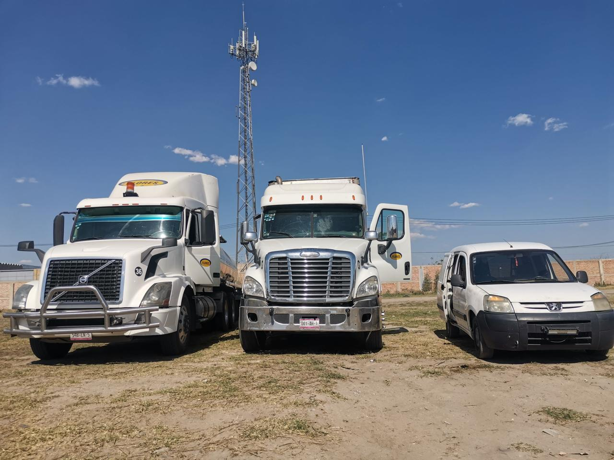
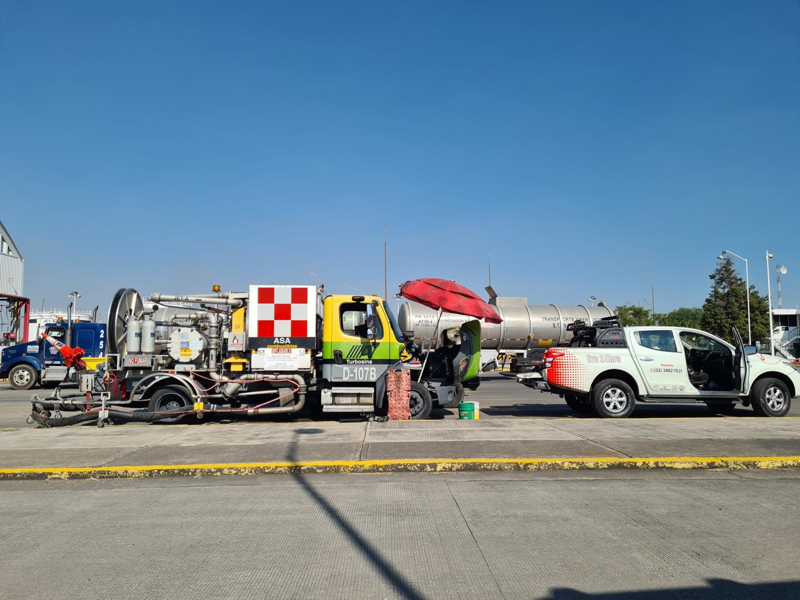
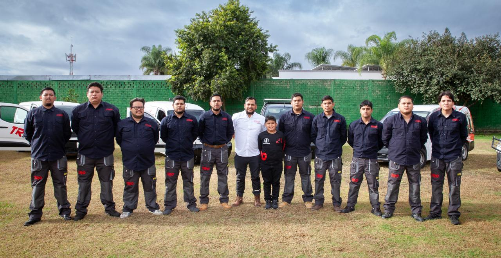
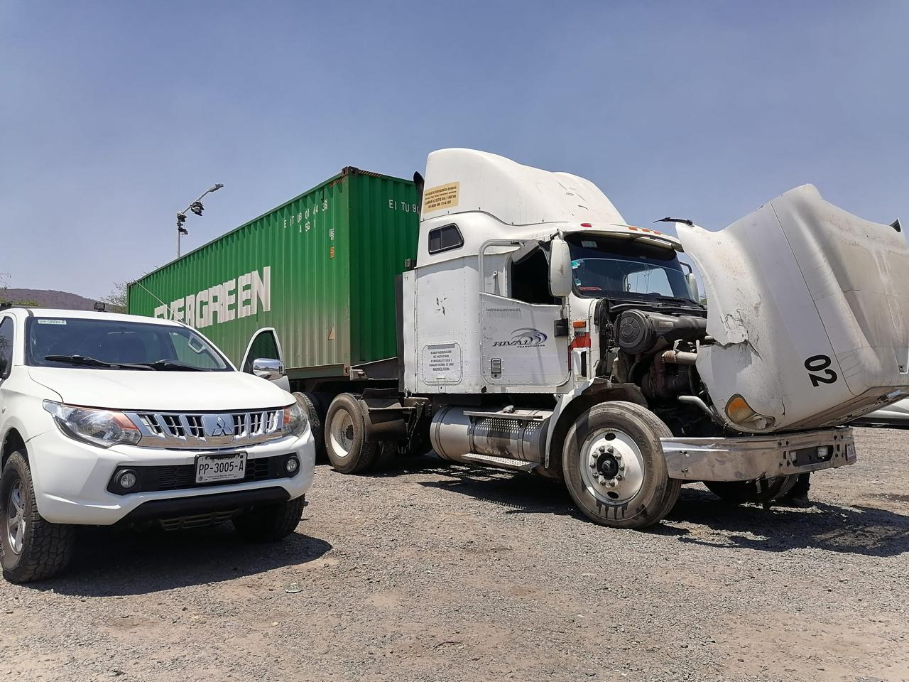
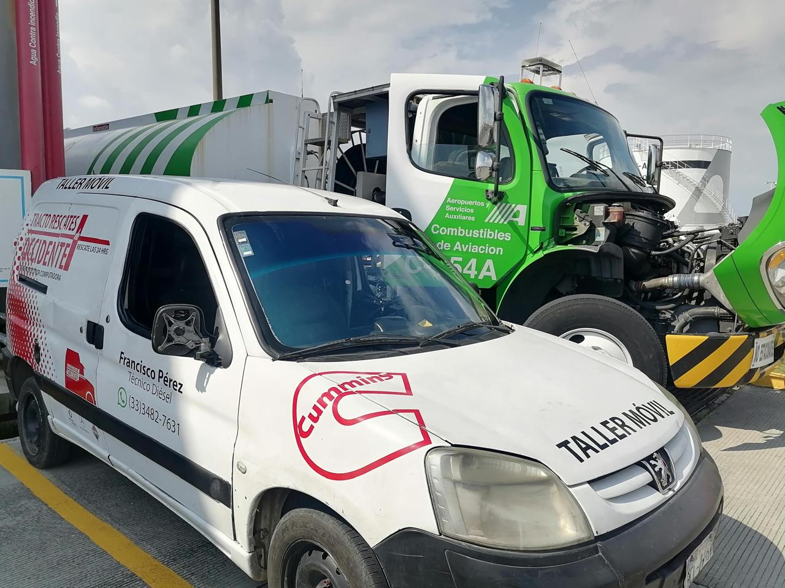
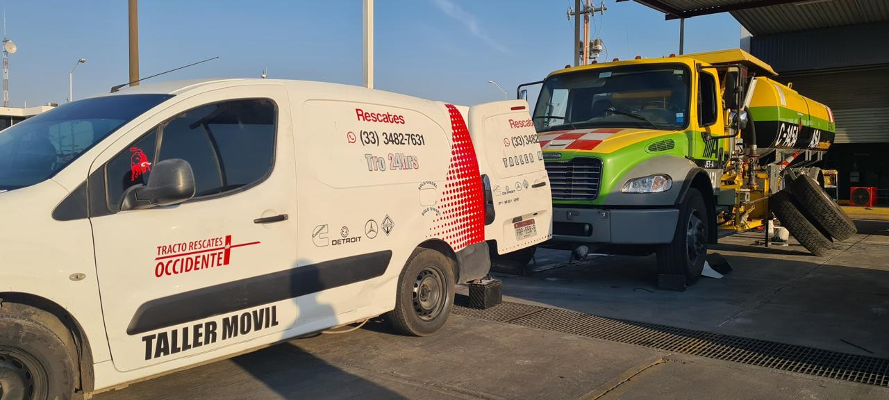

Reparación General de Motor
Restauramos y optimizamos el rendimiento del motor de tus tractocamiones.
Servicios desde Media reparación, reemplazo de válvulas, hasta calibración de válvulas y freno de motor.

De héroes para héroes.
¡Bienvenidos y bienvenidas a TRO!
Desde 2017, nuestro equipo de técnicos diésel certificados ofrece atención las 24 horas, con refacciones y servicios especializados. Lo que comenzó como un sueño hoy es una empresa consolidada con un equipo de profesionales dedicados a brindar un servicio excepcional y mantener su maquinaria en óptimas condiciones. ¡Confía en nosotros para cuidar de tu equipo pesado con la máxima calidad y profesionalismo!
0
Servicios excepcionales concretados en nuestra historia, trayectoria y experiencia nos respaldan.
0
Profesionales al servicio con honestidad y corazón. (y pronto seremos muchos más).

Contamos con hasta 50 servicios de reparación, mantenimiento y rescate carretero para unidades de tractocamiones.
Cubrimos todo occidente… y más allá.

Restauramos y optimizamos el rendimiento del motor de tus tractocamiones.
Servicios desde Media reparación, reemplazo de válvulas, hasta calibración de válvulas y freno de motor.

Asistencia rápida y efectiva para tractocamiones en situaciones de emergencia en carretera.
Servicio apasionado de rescate carretero para unidades de tractocamiones a cualquier lugar que nos sea requerido.

El mantenimiento preventivo de tractocamiones incluye inspecciones y reparaciones regulares para evitar fallas y asegurar un rendimiento óptimo.
Mantenimiento de motor, transmisión, diferenciales, reemplazo de anticongelante batería, ajuste de frenos entre muchos más.

Diagnóstico preciso y eficiente para mantener tus tractocamiones en óptimas condiciones.
Escaneo y diagnóstico de falla en actuador de combustible, reemplazo de bomba de combustible, configuración electrónica de tren motriz.